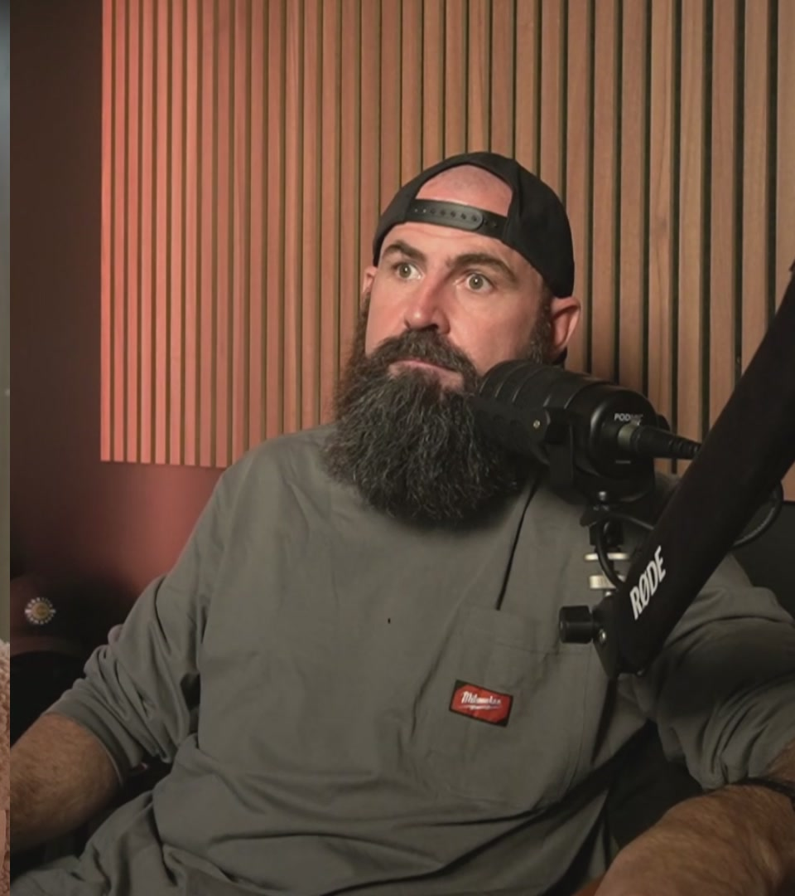

Trench Made Society
The room I wishI had in year one.
A brotherhood of blue-collar owners building in public. Real numbers, real systems, real mistakes, and the men who help you fix them.

Why it exists
You're not lazy.You were never taught.
Most owners are stuck because nobody taught them the difference between working in the business and working on it.
Trench Made Society is where I teach it, using Charlie Company as the live proof. I show the wins, the losses and the work. No highlight reel.
Inside the room
Business buckets. Where every dollar goes before you spend it.
KPI literacy. Read your numbers like a commander reads a map.
Burn per man-hour. Know what every hour on the job really costs you.
Practical AI. Tools tested inside Charlie Company before you ever see them.
Learning from mistakes. Systematically: mine and yours.
Brotherhood. Outside eyes on your offers, pricing, hires and numbers.
Membership, courses and live coaching live at trenchmadesociety.com.
Go to trenchmadesociety.com (opens in a new tab)The Creed
What every member lives by.
- 01Own
- 02Vision
- 03Reps
- 04Standards
- 05Systems
- 06Provide
- 07Brotherhood
- 08Faith
- 09Legacy
See you in the dirt.